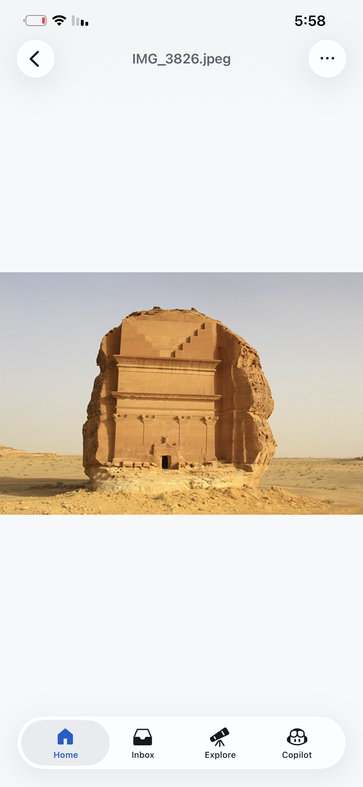
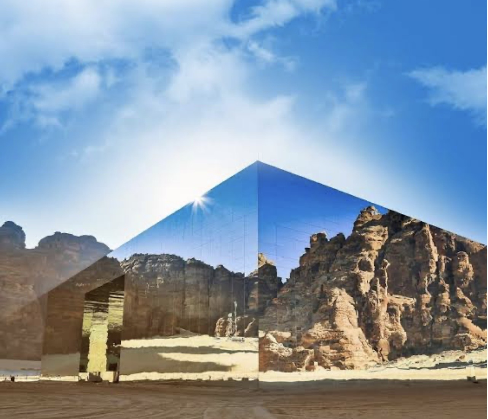
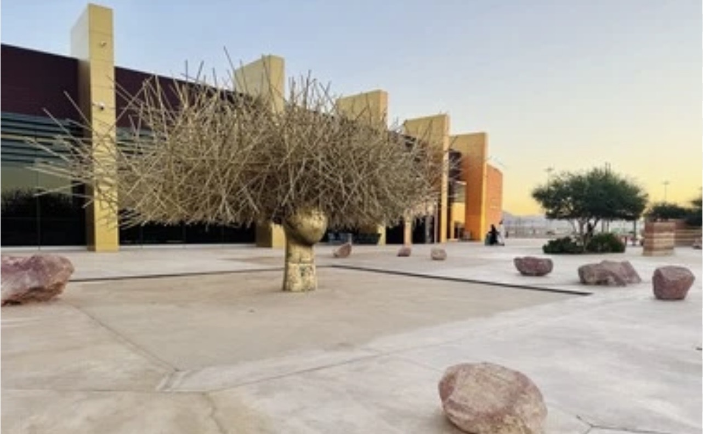

أبرز محطات الجولة

الحِجر جبل الفيل
جبل الفيل

قاعة مرايا البلدة القديمة
البلدة القديمة
 مطل الحرة
مطل الحرة

Private Tours
مرشد سياحي يعرف تاريخ العلا ومعالمها وأفضل أوقات الزيارة والتصوير.
استقبال وتوصيل من وإلى مطار العلا حسب وقت الرحلة، مع تنظيم الجولة عند الوصول.
يمكن ترتيب الجولة حسب عدد الأشخاص، مدة الزيارة، والمواقع التي يرغب الزائر في اكتشافها.

الحِجر
جبل الفيل

قاعة مرايا
البلدة القديمة
مطل الحرة
الاستقبال من الفندق أو مطار العلا والانطلاق حسب البرنامج المتفق عليه.
زيارة أشهر معالم العلا مع التوقف للتصوير والاستمتاع بالطبيعة والتاريخ.
إعادة الضيوف إلى الفندق أو مطار العلا في الوقت المحدد بكل راحة.
يمكن اختيار جولة نصف يوم أو يوم كامل أو عدة أيام حسب رغبة الزائر.
تنطلق الجولات يومياً، ويتم تحديد وقت البداية بما يتناسب مع برنامج الزائر.
الأسعار مرنة وتعتمد على عدد الأشخاص، مدة الجولة، والمواقع التي سيتم زيارتها.
معرفة واسعة بمعالم العلا، وأفضل أوقات الزيارة، والطرق المناسبة للوصول إلى المواقع السياحية.
إمكانية تعديل مسار الجولة بما يتناسب مع اهتمامات الزائر ووقته.
تنظيم الجولات بطريقة مريحة وهادئة مع الاهتمام بتجربة الزائر طوال الرحلة.
للاستفسارات وحجز الجولات السياحية في العلا، يمكنكم التواصل عبر الرقم التالي:
 +966 55 909 4784
+966 55 909 4784